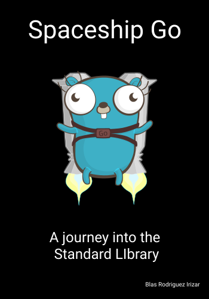
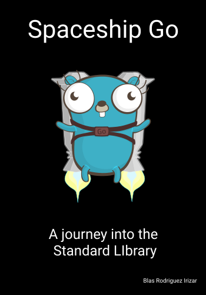

Preface
Welcome, traveler! This is a set of notes of my journey into part of Go's standard library, comprised into a book. I hope you enjoy it! Each chapter provides a dive into some packages. I will provide a brief introduction of what is the main purpose of the package, and some examples to help to understand. In some cases, I will add some references to external content that work either as a complementary view to the topic, or even to extend the coverage of the subject.
Who is this book for?
Ideally you are a software developer, or someone with great interest in how to write code. Having an understanding on the syntax and certain command of the Go programming language will certainly help. However, I will try to keep the explanations as simple as possible in order to be able to reach to a larger audience. And hopefully, this will still be found interesting for those looking for getting a deeper understanding of what tools the language and its runtime has to offer.
Feedback and comments
This book is built entirely using markdown. And it's also hosted publicly on Github. For comments, issues, or any kind of feedback, please use the Spaceship Go repository. PR's are more than wlecome, of any type!
Special thanks
Most of the book is just my interpretation of the Go's standard library. Besides this, I've found that the Go Blog is an extremely useful resource. Big thanks especially to Andrew Gerrand, for all the great contributions he has in that space.
There is also a Youtube channel called just for func, which I also highly
recommend. It was particularly useful to prepare the groundwork for the Context
chapter. Thanks to its creator, Francesc Campoy.
The cover of the book is based on original work from egonelbre gophers repo
Notes about Go docs
When visiting any of the packages in Go Std Library, there is a certain pattern that is being kept through. It helps to dissect it, so that we know what to expect from these docs, and also where to get extra information. First, there is an Overview, which is a simple paragraph that explains the scope of the package. It essentially tells the reader what to expect from the package in question. Additionally, in some cases, it can make some references to other packages when this helps to understand some design choices. This can, for example, happen when the API of two packages is very similar (i.e. bytes and strings).
The Index lists all the contents of the package. It outlines all the constants, variables, functions, structs, methods, and interfaces exported by the package. It's important to note that everything that is being listed in the docs is public elements. That means, that the author of the package has deliberately chosen to let the user of the API call. But there are other elements, that are not public. And these help to build functionality, but the author has chosen not to expose them out of the package. It is sometimes useful to go through the private items of the package. This can help to get some understanding of the design choices and trade-offs of some implementation. These private blocks are found directly in the source code of the package, which is found at the bottom of the index and examples, with the title of package files.
Go Specification
It's important to note that, while the scope of this book is the Standard Library, there is a lot of useful information in the Go Spec. This is a resource that needs to be considered and reviewed almost every time, when in doubt of how internal things work in the language.
Built in
Package builtin provides documentation for Go's predeclared identifiers. The items documented here are not actually in package builtin (...)
Built in package overview
Even though none of the items are defined in the built in package, it serves as a compilation of highly used items that every Go developer needs to be aware of. The goal of this chapter is to cover some of these elements, with special focus on how they are implemented.
Constants
Booleans true and false are defined here. And in a very smart and concise way:
const (
true = 0 == 0 // this is always true!
false = 0 != 0 // this is always false!
)
Iota (view https://github.com/golang/go/wiki/Iota and https://golang.org/ref/spec#Iota) represents successive untyped integer constants.
const iota = 0 // Untyped int.
These two examples, describe how iota can be useful:
const (
c0 = iota // c0 == 0
c1 = iota // c1 == 1
c2 = iota // c2 == 2
)
const (
a = 1 << iota // a == 1 (iota == 0)
b = 1 << iota // b == 2 (iota == 1)
c = 3 // c == 3 (iota == 2, unused)
d = 1 << iota // d == 8 (iota == 3)
)
Note: The << is a left shift operand, which shift lefts the operand by an integer
(in this case iota value). So, for instance 1 << 2 equals 1 * 2 * 2.
nil is a widely used variable. It is defined as:
var nil Type
It represents the zero value of a type, within these clases: slices, pointer, map, func, interface, or channel.
make and new
make
make is a very singular function. Its purpose is to allocate and initialize
an object of type slice, map, or chan (only). The output depends on the type
it's operating upon. You can see the differences, depending upon the type in the
excerpt below:
// from src/go/cmd/compile/internal/gc/builtin/runtime.go
func makemap64(mapType *byte, hint int64, mapbuf *any) (hmap map[any]any)
func makemap(mapType *byte, hint int, mapbuf *any) (hmap map[any]any)
func makemap_small() (hmap map[any]any)
func makechan64(chanType *byte, size int64) (hchan chan any)
func makechan(chanType *byte, size int) (hchan chan any)
func makeslice(typ *byte, len int, cap int) unsafe.Pointer
func makeslice64(typ *byte, len int64, cap int64) unsafe.Pointer
func makeslicecopy(typ *byte, tolen int, fromlen int, from unsafe.Pointer) unsafe.Pointer
new
It can be thought as a make alternative, but with a size equal to zero and
always initializing the value to its zero value.
defer
This function is not defined in the built-in package. But since it is used in
the example for recover I wanted to mention it.
defer is used to ensure that a function will be executed right before the
funcation that calls it terminates. As Go By example
mentions, other languages provide the construct finally in some contexts.
The syntax is simple:
defer func() { // ...
}()
Or directly
defer closeFile(f)
defer takes a closure as argument. Which means that it is possible to include a wide
range of elements inside it.
As noted in the recover section, if we call defer multiple times, the order in which
these functions will be executed is last in, first out. So, for instance:
import (
"fmt"
)
func main() {
fmt.Println("Let's count backwards:")
defer func() {
fmt.Println(1)
}()
defer func() {
fmt.Println(2)
}()
defer func() {
fmt.Println(3)
}()
}
This will output
Let's count backwards:
3
2
1
panic
It's a function that stops the normal execution of the goroutine. All the
deferred functions are still being called, and once they complete this goroutine
returns to the caller. To the caller, the panic on the callee triggers a
termination on itself. This is a recursive mechanism that can eventually terminate
in the program exiting with a non-zero code. However, it's possbile to control it
using recover. panic has different variants, and some are implemented in assembly,
while some other purely in Go.
// Some are implemented in go
func panicshift()
func panicdivide()
// Some others are implemented in assembly
func panicIndex(x, y int)
func panicIndexU(x uint, y int)
recover
Recover is a built-in function allows a program to manage behavior of a panicking goroutine. It is useful only inside a deferred function. It stops the panicking sequence by restoring normal execution and retrieves the error value passed to the call of panic. If recover is called outside the deferred function it will not stop a panicking sequence. In this case, or when the goroutine is not panicking, or if the argument supplied to panic was nil, recover returns nil. Thus the return value from recover reports whether the goroutine is panicking.
An example (https://blog.golang.org/defer-panic-and-recover) of the mechanisms of panic and defer:
package main
import "fmt"
func main() {
f()
fmt.Println("Returned normally from f.")
}
func f() {
defer func() {
if r := recover(); r != nil {
fmt.Println("Recovered in f", r)
}
}()
fmt.Println("Calling g.")
g(0)
fmt.Println("Returned normally from g.")
}
func g(i int) {
if i > 3 {
fmt.Println("Panicking!")
panic(fmt.Sprintf("%v", i))
}
defer fmt.Println("Defer in g", i)
fmt.Println("Printing in g", i)
g(i + 1)
}
// outputs
// Calling g.
// Printing in g 0
// Printing in g 1
// Printing in g 2
// Printing in g 3
// Panicking!
// Defer in g 3
// Defer in g 2
// Defer in g 1
// Defer in g 0
// Recovered in f 4
// Returned normally from f.
Note that the call to referred functions goes in the opposite direction. This is because the defer statement places the goroutine in the goroutine stack. And thus, they get popped in LIFO order.
The same example, but without calling recover inside a defer is presented below:
package main
import "fmt"
func main() {
f()
fmt.Println("Returned normally from f.")
}
func f() {
// defer func() {
// if r := recover(); r != nil {
// fmt.Println("Recovered in f", r)
// }
// }()
fmt.Println("Calling g.")
g(0)
fmt.Println("Returned normally from g.")
}
func g(i int) {
if i > 3 {
fmt.Println("Panicking!")
panic(fmt.Sprintf("%v", i))
}
defer fmt.Println("Defer in g", i)
fmt.Println("Printing in g", i)
g(i + 1)
}
// outputs
// Calling g.
// Printing in g 0
// Printing in g 1
// Printing in g 2
// Printing in g 3
// Panicking!
// Defer in g 3
// Defer in g 2
// Defer in g 1
// Defer in g 0
// AND NOW, this is different!
// panic: 4
// panic PC=0x2a9cd8
// [stack trace omitted]
Bytes
Bytes are program's building blocks.
In Go, a byte is a type alias of uint8, and thus it is defined as:
type byte = uint8
And thus, when talking about bytes, we mean a slice of byte, namely: []byte.
Why and when use bytes?
Bytes are pervasive, especially when working in systems programming. If you want to work on an application related to networking, operating systems, databases, you will likely end up working with bytes. And that is why it's very important to understand what tools are available off the self.
In the following sections, we will address some operations Go allows us to perform on bytes.
Compare
First, we can compare two bytes. That is, having a function that tells us whether these two bytes are the same or not.
func Compare(a, b []byte) int
The function Compare does this for us. It checks whether two byte slices are the same, and returns the result as an integer. The function performs a lexicographic comparison and returns 0 if they are the same, -1 if a < b and +1 if a > b.
It's interesting to note how this function is implemented. Diving into Go's source code we can see the following:
func Compare(a, b []byte) int {
return bytealg.Compare(a, b)
}
Something as simple as just comparing bytes, involves going down to assembly language.
The function Compare calls the function Compare in the package bytealg, which defines
Compare like this:
//go:noescape
func Compare(a, b []byte) int
The directive //go:noespace tells the compiler that the values passed to the function
must be stored in the stack. And addtionally that the function implementation is not written
in Go. This means that the byte comparison function is implemented in a lower laguage, like
assembly.
Check Compiler directives if you want to get more details in this topic.
Index
Let's say we have some bytes, represented as a slice of byte, which in Go lingo means
[]byte. If we want to verify whether these bytes contain a certain subset of bytes,
and we're particularly interested in knowing where in the slice they are located
we can use the function Index, provided in the package bytes.
func Index(s, sep []byte) int
The way it is implemented is as follows:
- If the lenght of the separator is 0, then it returns 0. Nothing more to do
- If it is 1, it calls another function called IndexByte to do the work. This is also an assembly function. One of its variants can be found here
- If the sizes between sep and s match, then it checks whether they are equal or not. For that, it calls Equal, which we have already mentioned.
- If the separator length is bigger than one, then it's no longer a byte. It then goes to a more complex logic involving
bytealg.Index.
Besides the full implementation, sometimes it's usefule to follow how things work under the hood. And in such a low level package, we can find the need of working with assembly and targetting the different architectures. Check bytealg package for an overview.
Working with buffers
Sometimes our program needs to manipulate bytes. And we might or might not now what's the size of this stream of bytes coming. Or perhaps we need to work with chunks... who knows!
Buffers can help you, when you find yourself in these waters. But wait. What's a buffer?
Think of it as a variable sized array of bytes. It's a data structure that can be
resized to accomodate more or less bytes. It lets you write (WriteByte) new bytes to it,
read bytes from it (ReadByte), remove some bytes (Truncate), remove all (Reset), etc.
To create a Buffer, we need to call either NewBuffer or NewBufferString.
The difference is in the input that they take. The former accepts a byte slice []byte
while the latter expects a string.
For testing purposes let's say we create a buffer with some bytes:
// we call
b := bytes.NewBuffer([]byte("some bytes"))
To get the slice back, the Bytes method that can be used:
b.Bytes() // [115 111 109 101 32 98 121 116 101 115]
We can read a fixed amount of bytes by using Next(n int). It's important to note
that calling this method will actually read the bytes. And thus, the buffer
will have a new length of the previous one minus n. In case the buffer's length
was less than n, then the method will return the entire buffer.
Alternatively, buffers can grow, be truncated and reset. For that, we have:
func (b *Buffer) Grow(n int) // increases the buffer's capacity
func (b *Buffer) Truncate(n int)
func (*Buffer) Reset() // same as Truncate(0)
Truncate(n int) will discard all the bytes from the buffer, except for the first n ones.
It does not shrink the capacity of the buffer. So this means that the buffer can still
accommodate the same amount of elements without having to perform a memory allocation.
If n < 0 or n > b.Len() then it panics.
If you want to shrink a buffer, Go does not offer a built in way of doing it. An alternative of achieving it would be:
// https://stackoverflow.com/questions/16748330/does-go-have-no-real-way-to-shrink-a-slice-is-that-an-issue
b = append([]T(nil), b[:newSize]...)
It is possible to work with the Reader interface. But it won't be covered in this chapter.
Context
Package context defines the Context type. A context can include deadlines, cancellation signals, and other request-scoped values across API boundaries and between processes. A key feature of this pattern is that it allows signals to be propagated. So for instance, when a context is cancelled then all the contexts derived from it are cancelled as well.
Context is a very singular pattern, that I have not seen implemented in the standard libraries of other languages. And since it's widely adopted in different projects, I thought it was worth covering it.
Go proposes an interface to work with Context, which is
Programs that use Contexts should follow these rules to keep interfaces consistent across packages and enable static analysis tools to check context propagation:
Do not store Contexts inside a struct type; instead, pass a Context explicitly to each function that needs it. The Context should be the first parameter, typically named ctx:
func DoSomething(ctx context.Context, arg Arg) error {
// ... use ctx ...
}
Next, we describe some different functionalities offered by the package and show alternatives of how it can be used. Much of it has been taken from this blog post by Sameer Ajmani.
Context details
The Context carries a deadline, a cancellation signal, Done and other values
across processes and APIs. It is defined as an interface:
type Context interface {
Deadline() (deadline time.Time, ok bool)
Done() <-chan struct{}
Err() error
Value(key interface{}) interface{}
}
Note: these methods may be called by multiple goroutines simultaneously.
The package provides different types of contexts, with different service levels:
- emtpyCtx: it's one that is never cancelled, has no values and no deadline
- canccelCtx: is one that can be cancelled. When cancelled, it also cancels all its children that implement cancel.
- valueCtx: carries a key-value pair. Delegates all other calls (such as cancel) to its embedded context.
- timerCtx: carries a timer and a deadline. It embeds
canccelCtxto implementDoneandErr.cancelis implementing by stopping its timer and delegating the call tocancelCtx
It's important to note that as a user of the package, we only have access to these types through
func WithCancel(parent Context) (ctx Context, cancel CancelFunc)
func WithDeadline(parent Context, d time.Time) (Context, CancelFunc)
func WithTimeout(parent Context, timeout time.Duration) (Context, CancelFunc)
CancelFunc
type CancelFunc func()
When creating a context, there are some factory functions. And all of them return a CancelFunc type.
This is, as its name indicates, a function. It tells an operation to abandon its work. It's async, and
it can be called by multiple goroutines simultaneously. After the first call, the subsequent calls are
no-ops.
As an example, for the cancelCtx, cancel method exists. It closes the done channel and cancels
all of its children, plus some other cleaning tasks.
Examples
This is an extension of the original example provided in the std library. It depicts the usage of context within several goroutines that form a tree.
Once the main goroutine triggers the cancel function, all the others
are also cancelled.
package main
import (
"context"
"fmt"
"time"
)
func main() {
// gen generates integers in a separate goroutine and
// sends them to the returned channel.
// The callers of gen need to cancel the context once
// they are done consuming generated integers not to leak
// the internal goroutine started by gen.
gen := func(ctx context.Context) <-chan int {
ctx2, cancel := context.WithCancel(ctx)
defer cancel()
// propagating the cancel context to a new goroutine
go doStuff(ctx2)
dst := make(chan int)
n := 1
go func() {
for {
select {
case <-ctx.Done():
fmt.Println("Closing gen")
fmt.Println(n)
return // returning not to leak the goroutine
case dst <- n:
n++
}
}
}()
return dst
}
ctx, cancel := context.WithCancel(context.Background())
// defer cancel() // cancel when we are finished consuming integers
for n := range gen(ctx) {
fmt.Println(n)
if n == 5 {
break
}
}
cancel()
for {
time.Sleep(3 * time.Second)
break
}
}
func doStuff(ctx context.Context) {
fmt.Println("Starting child")
for {
select {
case <-ctx.Done():
fmt.Println("Closing child")
return
}
}
}
A plausible output (it's non-deterministic):
1
2
3
4
5
Closing gen
6
Starting child
Closing child
Using WithTimeout
This example is rather simple. But it shows how to propagate a timeout into a tree.
Here we show how the main goroutine receives a Done signal after 50 miliseconds. This
triggers (through cancel) subsequent Done signals to all the goroutines that
where created with the WithTimeout method.
package main
import (
"context"
"fmt"
"time"
)
func main() {
// Pass a context with a timeout to tell a blocking function that it
// should abandon its work after the timeout elapses.
ctx, cancel := context.WithTimeout(context.Background(), 50*time.Millisecond)
ctx2, cancel2 := context.WithTimeout(context.Background(), 50*time.Millisecond)
func(ctx2 context.Context) {
select {
case <-ctx2.Done():
fmt.Println(ctx2.Err()) // prints "context deadline exceeded"
return
case <-time.After(100 * time.Millisecond):
fmt.Println("overslept 2")
}
}(ctx2)
defer cancel()
defer cancel2()
select {
case <-time.After(100 * time.Millisecond):
fmt.Println("overslept")
case <-ctx.Done():
fmt.Println(ctx.Err()) // prints "context deadline exceeded"
}
}
Context being used in the real world
These are some libraries making heavy use of this pattern:
Errors
Error handling is a very important topic in software engineering. There are plenty different schools of thought. Go's approach to it is very simple. It treates errors as values, and to some people unsufficient. But we won't get into this discussion here.
The error type is used to indicate an abnormal state. When this happens,
there are several ways to act. In this chapter, we will only focus on the
availability of tools that Go provides the developer to characterize and respond
to these anomalies.
error is defined in the built-in package as:
type error interface {
Error() string
}
However, this package provides nothing else than this interface. Most of the
surrounding infrastructure is provided within the errors package instead.
As
As finds the first error in err's chain that matches target. If it
succeds, it sets target to that error value and returns true. Otherwise,
it returns false.
As panics if target is not a non-nil pointer to either a type that implements
error, or to any interface type.
var e *QueryError
if errors.As(err, &e) {
// err is a *QueryError, and e is set to the error's value
}
Is
Is reports whether any error (as opposed to finding the first with As)
in err's chain matches target.
The chain consists of err itself followed by the sequence of errors obtained by repeatedly calling Unwrap.
if errors.Is(err, ErrPermission) {
// ...
}
This equivalent to the following:
if e, ok := err.(*QueryError); ok && e.Err == ErrPermission {
// ...
}
Remarks
One of the biggest advantages of having these two methods, is when working with highly nested errors. They bring all the necessary machinery to unwrap as much as needed until a match is found. Or if there is no match, we are sure that all the inner errors were also compared.
Unwrap
(feature added in Go 1.13)
This is an interesting feature, when building errors that contain other errors.
Unwrap is actually defined as follows:
func Unwrap(err error) error {
u, ok := err.(interface {
Unwrap() error
})
if !ok {
return nil
}
return u.Unwrap()
}
It first checks whether err has itself the Unwrap method. If it doesn't, then
nothing else can be done. There is nothing to unwrap. Nada. But if the method
is defined, it calls it and returns its value, which is an error itself.
This is a very useful way of composing errors, and thus adding much more information. We could think of the following scenario:
package main
import (
"fmt"
"log"
"errors"
)
type databaseError struct {
err error
}
type queryMissingParamsError struct {
params string
}
func (de *databaseError) Unwrap() error {
return de.err
}
func (de *databaseError) Error() string {
return fmt.Sprintf("Database error. %s", de.err)
}
func (qmp *queryMissingParamsError) Error() string {
return fmt.Sprintf("Some parameter were missing: %s", qmp.params)
}
// bogus query
type Query struct {}
func (q *Query) Check() error {
return &databaseError {
err: &queryMissingParamsError {
params: "name",
},
}
}
func handleDatabaseQuery(query *Query) error {
err := query.Check()
if err == nil {
return nil
}
log.Print(err)
return errors.Unwrap(err)
}
func main() {
q := &Query{}
err := handleDatabaseQuery(q)
fmt.Println(err)
}
In this example, we can see how an error can pack and unpack other errors. And we can choose to define a strategy for the different scenarios. So, in this particular example, we could ask the user to make the query again and remind her not to forget to include name as a paramter.
Making error great again
The following is a canonical example of how horrible error handling can become in Go:
_, err = fd.Write(p0[a:b])
if err != nil {
return err
}
_, err = fd.Write(p1[c:d])
if err != nil {
return err
}
_, err = fd.Write(p2[e:f])
if err != nil {
return err
}
// and so on
An improvement, using a helper function:
var err error
write := func(buf []byte) {
if err != nil {
return
}
_, err = w.Write(buf)
}
write(p0[a:b])
write(p1[c:d])
write(p2[e:f])
// and so on
if err != nil {
return err
}
However, here we need to be sure that err is being captured by write
every time we call this function. We could actually do better, by creating a
new type, and adding a method for it that does what write is doing here. Then,
we will not need to have any closure, nor ensure that the value is being closed
by the function.
This is even a much better way of working with errors. And in some ways, it brings to the table some of Haskell's/FP approach to error handling:
type errWriter struct {
w io.Writer
err error
}
func (ew *errWriter) write(buf []byte) {
if ew.err != nil {
return
}
_, ew.err = ew.w.Write(buf)
}
ew := &errWriter{w: fd}
ew.write(p0[a:b])
ew.write(p1[c:d])
ew.write(p2[e:f])
// and so on
if ew.err != nil {
return ew.err
}
Here, write checks whether errWriter have failed before. If it
did, then it won't do anything again; we are an abnormal state already.
Otherwise, it's free to do some work.
References:
- https://blog.golang.org/errors-are-values
- http://jxck.hatenablog.com/entry/golang-error-handling-lesson-by-rob-pike
Sync
When working on a concurrent setup, Go's capabilities shine. It exposes natively channels and goroutines. It makes it really easy to get off the ground with a program that can -in many cases- run much faster.
The hard part of concurrency stems from having moving parts, which need
to communicate with each other and where sequence of that exchange really
matters. There are times wehere channels fall short. And that's why resorting
to the sync package can be a really good option.
Normally, I only pick a selection of functions, types, methods and interfaces to
cover from each package. But syncis an exception. I will cover everything from
it, because I really believe it's a critical package. And mastering makes a
difference.
Cond
Cond implements a condition variable, a rendezvous point for goroutines waiting for or announcing the occurrence of an event.
Broadcast
A typical use case for Broacast is when multiple goroutines are waiting
for something to happen. In order to let all of them that a certain event
happened using channels, then we would need to have one channel for each
of them. And then send each of them a message. This is what Broadcast
is about. Broadcast wakes all goroutines waiting on that Condso that
they can continue working.
Inside a Cond type, there is an attribute called notify of type notifyList.
notify is used by a function called runtime_notifyListNotifyAll in order to wake
up all goroutines.
func (c *Cond) Broadcast() { c.checker.check() runtime_notifyListNotifyAll(&c.notify) }
And even when it's not necessary to understand how Broadcastworks, if we peek
at runtime_notifyListNotifyAll implementation, we can actually verify that it
readies all the outstanding goroutines by calling goready.
// notifyListNotifyAll notifies all entries in the list.
//go:linkname notifyListNotifyAll sync.runtime_notifyListNotifyAll
func notifyListNotifyAll(l *notifyList) {
// Fast-path: if there are no new waiters since the last notification
// we don't need to acquire the lock.
if atomic.Load(&l.wait) == atomic.Load(&l.notify) {
return
}
/*
ommited code
*/
s := l.head
/*
ommited code
*/
for s != nil {
next := s.next
s.next = nil
readyWithTime(s, 4) // this function calls goready
s = next
}
}
Signal
Signal will only wake one goroutine, if there was at least one waiting.
The implementation is similar to the one for Broadcast. This time, it relies
on a helper function called notifyListNotifyOne.
Wait
Cond has an associated Locker (which normally is a *Mutex or *RWMutex). This
Locker must be held when calling the Wait method.
If there's a goroutine that needs to be awaken to do some work, it can be modelled as follow:
go func(c *sync.Cond) {
// hold the Locker when calling the wait method
c.L.Lock()
for !condition() {
c.Wait()
}
// ... make use of condition ...
c.L.Unlock()
// Unlock the Locker when its done
}
For completeness, a Locker is just an interface that defines two methods: Lock and Unlock.
Mutex
A Mutex is a flag that can be held by at most one goroutine at at time. Its
name is derived from mutually exclusive, which indicates its purpose. The
raison d’etre of a Mutex is synchronization, by preventing that no other
goroutine can perform an operation over the resources that are being mutexed.
It fulfills the Locker interface, thus it defines Lock and Unlock.
It's important to note that a lock doesn't belong to a particular goroutine.
Thus, it's allowed for a goroutine to lock the Mutex and another to Unlock
it. Therefore, it's still important how the different goroutines interact with
the resource in order both to avoid deadlocks but also to avoid accessing to
a resource when it's not locked.
Lock
This is how Lock is implemented. But the real meat lies in lockSlow, which
we won't cover here. I'm mostly copying the definition just to see how the pieces
are put together. The complete implementation is quite complicated, and it involves
assembly code in the very end.
func (m *Mutex) Lock() {
// Fast path: grab unlocked mutex.
if atomic.CompareAndSwapInt32(&m.state, 0, mutexLocked) {
if race.Enabled {
race.Acquire(unsafe.Pointer(m))
}
return
}
m.lockSlow()
}
If the Mutex is already locked, then the goroutine that calls Lock will block
until the Mutex gets released, and can be locked by it.
Unlock
This method is responsible for unlocking the Mutex. It can be called from any
goroutine, and it's not necessary that is the one that locked it. However, if
it's unlocked, it cannot be unlocked right away. Otherwise, it panics.
The implementation of this behavior is as follows:
const (
mutexLocked = 1 << iota // mutex is locked
)
func (m *Mutex) unlockSlow(new int32) {
if (new+mutexLocked)&mutexLocked == 0 {
throw("sync: unlock of unlocked mutex")
}
/*
...
*/
}
Once - Do
A very simple - but sometimes useful - method is Do. Its role is simply to
guarantee that a function run through it won't run more than once. This means
that if we have:
var once sync.Once
a := make([]int, 0)
once.Do(func() {a = append(a, 1)})
once.Do(func() {a = append(a, 2)})
fmt.Print(a) // [1] and not [1 2]
Once is the right type, when it's important that a certain resource gets
called or initialized only once. In order to be able to call it again, and
that the function is actually run, another instance of Once needs to be
defined. And Do called from that new instance.
Pool
A Pool is a set of temporary objects that may be individually saved and retrieved.
Pool provides a way to amortize allocation overhead. It serves for when there
are multiple users of a resource, and we would like to avoid having to create
a new time every time we need to.
Pool caches allocated but unused items so that they can be available for later
use. It releives pressure from the garbage collector. However,
Any item stored in the Pool may be removed automatically at
any time without notification.
type Pool struct {
// New optionally specifies a function to generate
// a value when Get would otherwise return nil.
// It may not be changed concurrently with calls to Get.
New func() interface{}
// contains filtered or unexported fields
}
The important bit from the definition is that, whenever we call
Get, and there are no items left in the pool, then it creates
a new one by calling New.
Once an item has been used, it can be returned to the Pool by
calling Put. Put adds an item back into the Pool.
WaitGroup
A WaitGroup waits for a collection of goroutines to finish. The main goroutine calls
Addto set the number of goroutines to wait for. Then each of the goroutines runs and callsDonewhen finished. At the same time,Waitcan be used to block until all goroutines have finished.
It's possible to have another goroutine also to wait on this group. The only
real constraint is that Add can only be called by the main one.
Add
func (wg *WaitGroup) Add(delta int)
The delta defines how many more - or less - goroutines, the goroutines
waiting need to actually wait for. When the counter gets to zero, then
all the waiting goroutines get released. If the counter is negative, then
Add panics.
Done
It decrements the counter by one.
Wait
Blocks the goroutine until the counter of the WaitGroup gets to zero.
IO
Package io provides basic interfaces to I/O primitives. Its primary job is to wrap existing implementations of such primitives, such as those in package os, into shared public interfaces that abstract the functionality, plus some other related primitives.
io is a very important package in Go. It provides a set of primitives
and interfaces that every developer needs to understand in order to work
properly with bytes, standard input, output, error and pipes among others.
An important note is that these primitives are not thread safe by default. This means that they shouldn't be used by multiple goroutines at the same time.
Writer
Writer is the interface that wraps the basic Write method. io package makes
extensive use of this interface. Writer is implemented by os.File. Which
in the io package is used to reference to Stdin, StdOut, and StdErr:
var (
Stdin = NewFile(uintptr(syscall.Stdin), "/dev/stdin")
Stdout = NewFile(uintptr(syscall.Stdout), "/dev/stdout")
Stderr = NewFile(uintptr(syscall.Stderr), "/dev/stderr")
)
How does writer works?
Write writes len(p) bytes from p to the underlying data stream. It returns the number of bytes written from p (0 <= n <= len(p)) and any error encountered that caused
writefunction to stop early. Write must return a non-nil error if it returns n < len(p).Writemust not modify the slice data, even temporarily.
Implementations must not retain p.
type Writer interface {
Write(p []byte) (n int, err error)
}
To see an implementation, we can check the one for os.File. There
are some OS dependent helper functions that help Write doing their
job. But essentailly it is a transparent copy of its description.
Check a fragment of the POSIX implementatiof of Write from the source
code in the os package:
// Write writes len(b) bytes to the File.
// It returns the number of bytes written and an error, if any.
// Write returns a non-nil error when n != len(b).
func (f *File) Write(b []byte) (n int, err error) {
// for posix f.checkValid returns nil unless f is nil
if err := f.checkValid("write"); err != nil {
return 0, err
}
n, e := f.write(b)
if n < 0 {
n = 0
}
if n != len(b) {
err = io.ErrShortWrite
}
epipecheck(f, e)
if e != nil {
err = f.wrapErr("write", e)
}
return n, err
}
Side note: it's important to see that write will block the thread. There's
an ongoing discussion to provide
an async API for files, but it's still being considered.
Reader
Similarly, Reader is the reading counterpart. It is also an interface that wraps
the Read method.
Readreads up to len(p) bytes into p. It returns the number of bytes read (0 <= n <= len(p)) and any error encountered. Even ifReadreturns n < len(p), it may use all of p as scratch space during the call. If some data is available but not len(p) bytes,Readconventionally returns what is available instead of waiting for more.
It is defined as:
type Reader interface {
Read(p []byte) (n int, err error)
}
As an implementor of Read, when there is nothing else to read, the Standard
Library suggest to return 0, EOF instead. 0, nil is only acceptable when
p length is equal to zero. But that's not happening very often.
Additionally, the Standard Library suggest first reading the n bytes, and then
handling the error if there was any. It adds that:
Doing so correctly handles I/O errors that happen after reading some bytes and also both of the allowed EOF behaviors.
Read implementation for type os.File relies on a helper function read that
does all the work (except error handling). read itself relies on poll.FD (on *nix),
which is in charge of checking whether there is anything to be read on that
file descriptor. For the very curious reader, go and check its implemenation of
FD's Read here.
func (f *File) Read(b []byte) (n int, err error) {
if err := f.checkValid("read"); err != nil {
return 0, err
}
n, e := f.read(b)
return n, f.wrapErr("read", e)
}
Pipe
In Go a pipe is synchronous in-memory pipe. pipe is a type that
is not publicly exposed. However, io allows us to interact with
it through PipeWriter and PipeReader. In order to create
these two halves of the pipe, io has a function:
func Pipe() (*PipeReader, *PipeWriter)
Just for having the full picture, and to see how it works under the hood, this
is how pipe is defined:
// A pipe is the shared pipe structure underlying PipeReader and PipeWriter.
type pipe struct {
wrMu sync.Mutex // Serializes Write operations
wrCh chan []byte
rdCh chan int
once sync.Once // Protects closing done
done chan struct{}
rerr onceError
werr onceError
}
Again, as consumers of pipe we only care about PipeReader and PipeWriter.
It can be used to connect code expecting an
io.Readerwith code expecting anio.Writer.
Sometimes it can happen that we hold an io.Reader, but we need to call a function
that expects an io.Writer. Pipe is a really good tool for acheiving it.
The data is copied directly from the
io.Writeto the correspondingio.Read(or Reads) there is no internal buffering.
Video about pipes
I really suggest anyone to visit this video to get a deeper understanding on how to use pipes.